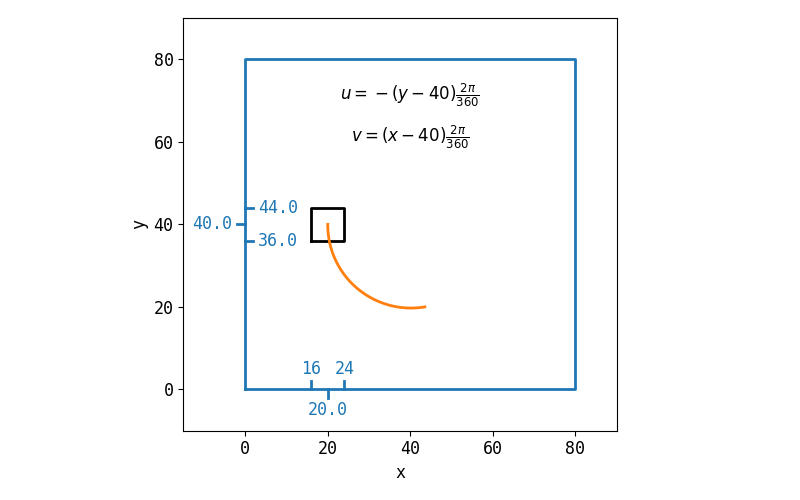

2.4.9. Rotational Square¶
2.4.9.1. Problem Description¶
The domain is a square \(x \in [0, 80], y \in [0, 80]\). The boudary conditions are
\[\frac{d \phi}{d x} = 0\]
The velocity is
\[u = -(y - 40)\frac{2 \pi}{360}\]
\[v = (x - 40)\frac{2 \pi}{360}\]
Initial condition of the domain is
\[\phi = 1, \quad \text{if} \in [16, 24], \quad y \in [44, 36]\]
\[\phi = 0, \quad \text{elsewhere}\]

Fig. 2.67 Illustration of the problem.¶
It t = 360, the square will rotate back.
2.4.9.2. Results¶

2.4.9.3. Case Information¶
Run time infomation:
Functions |
Wall Time (s) |
|---|---|
dt_cmake |
2.51868e+00 |
dt_make |
8.40474e+00 |
dt_run |
7.74738e+01 |
dt_plot |
2.99113e+01 |
File |
Creat Time |
Modified Time |
|---|---|---|
main.cpp |
20-01-15 23:34 |
20-01-15 23:34 |
CMakeLists.txt |
20-01-15 21:42 |
20-01-14 21:27 |
plot.py |
20-01-15 23:34 |
20-01-15 23:34 |
run.py |
20-01-15 22:56 |
20-01-15 22:56 |
report.rst |
20-01-15 23:34 |
20-01-15 23:34 |